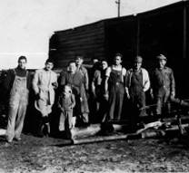
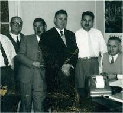
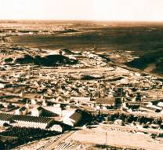
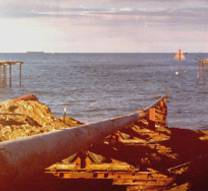
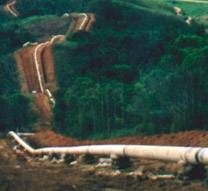
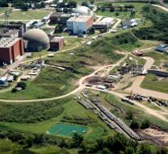
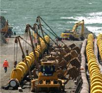

-

Nuestra Historia
En 1947 los hermanos Carlos y Víctor Contreras fundan en Zapala, Provincia de Neuquén,
Contreras Hermanos S.R.L, aunando escasos capitales, pasión por el trabajo
y la ilusión del progreso económico y social.
1947 a 1975 Contreras SRL nace como una empresa dedicada a obras viales y civiles en los yacimientos de la Cuenca del Golfo San Jorge, viabilizando la expansión de YPF en la zona. Gracias a la capacidad de servicio de esta generación de emprendedores, YPF renueva su compromiso requiriendo obras industriales que permiten progresivamente la consolidacion de la empresa. La incorporación de las habilidades de construccion y gestión de proyectos industriales permite la captación de nuevos clientes.1975 a 2005 El desarrollo del negocio requiere la modificación del tipo societario. Se crea Contreras SAICIFAGYM, continuadora de la SRL. La nueva Contreras diversifica su actividad, captando proyectos de mayor complejidad : grandes ductos para el transporte de gas y petróleo, y obras de infraestructura de gran porte.2005 a actualidad La diversificación de la cartera de productos es total, a partir del desarrollo de obra electromecánica para la minería de litio. En paralelo, Contreras inicia un proceso de regionalización, atendiendo clientes en Chile, Perú, Brasil y Uruguay